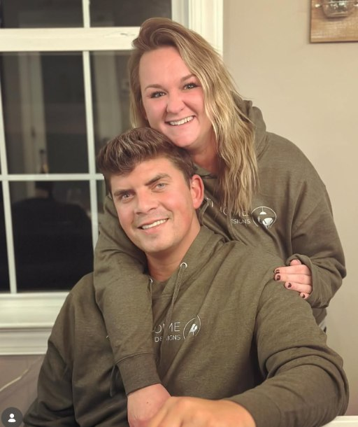

A thoughtful approach to everyday living
Thoughtfully Designed.
Beautifully Made.
Remodeling, interiors, handcrafted goods,
and stories for the home.
Home is in
the details.
Almost Home Designs brings remodeling, interior design, pottery and carpentry together under one thoughtful point of view. Warm, functional spaces. Personal, everyday pieces.

A detail worth coming home to
Same island.
New character.
Board and batten gives this existing island a thoughtful new finish. A small change that makes the whole space feel more considered.
Take a closer look ↗Made by hand.
Kept for years.
Pottery, woodworking, home décor and gifts with the warmth and character we bring to our spaces.
Explore the collection ↗

AI-enhanced previews of the maker’s pieces. Ask about current availability and exact finishes.
 Mallory Deck · Illustrated by Sadiqa Akhter
Mallory Deck · Illustrated by Sadiqa Akhter04 / Books & stories
A little adventure.
A lot of heart.
The Summer Switch Up by Mallory Deck, illustrated by Sadiqa Akhter. A children’s story about big feelings, family, summer adventure and making memories.

The people behind Almost Home
Hi, we’re
Mallory & Mike.
Almost Home Designs brings together our love of interiors, remodeling and making things by hand. From a new detail in your kitchen to a piece on your shelf, we want home to feel personal.
Get to know us ↗Almost home.
Let’s begin.
Start with a free consultation.